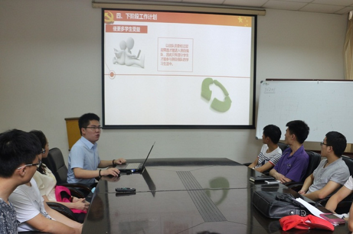
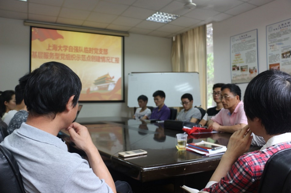

2017年6月6日上午10点，上海大学自强队临时党支部基层服务型党组织示范点创建情况汇报会在延长校区电机楼二楼会议室圆满举行。参加本次会议的人员有上海大学党委组织部汤智佩老师、勾金华老师，上海大学机自学院党委书记刘亮老师，上海大学自强队指导教师陈万米老师、黄慎之老师，自强队临时党支部书记贺永祥同学以及来自上海大学机电工程与自动化学院副书记、各系的总支书记、辅导员老师和自强队队员代表。
会议首先由自强队临时党支部书记贺永祥同学对自强队进行了初步的介绍，自强队成立于2001年，是在钱伟长校长“学生培养更重要在课外”的指导思想下形成的一支融学生学术与课外实践于一体的大学生科创团体。为更好地推进自强队的发展，同时也为充分发挥自强队党员同学的模范带头作用，自强队于2008年4月在自身的基础上建立起了临时党支部。截止2017年5月，自强队现有队员116名，其中党员16人，入党积极分子33人。
随后，贺永祥同学就自强队临时党支部的建设情况以及至今所取得一些成绩和在座的老师与同学们做了汇报。自强队临时党支部自成立以来始终遵循“本硕联动、发展科创”的新型培养模式，坚持“以党建推进科创、以科创促进党建”的发展理念，通过丰富多彩的社会实践与科研比赛，将党员、积极分子和其他同学紧密地联系在一起，在基层服务型党组织中不断发挥着战斗堡垒的作用。
会上，自强队指导教师黄慎之老师以自己在自强队工作的亲身经历和自强队智能模型车组老队员李博同学“敢于质疑权威”的生动故事勉励队员们在科研的道路上不畏艰险、勇于拼搏、开拓进取。自强队指导教师陈万米老师就自强队目前的发展情况和存在的一些具体问题做了总结和指导。自强队家庭组领队汪洋同学和自强队家庭仿真组队员范欢喜同学分别作为入党积极分子和党员学生代表发表了自己的感想并表示会继续秉持“自强不息”的精神，与朋辈们一起为自强队的荣誉而战。
上海大学党委组织部汤智佩老师、勾金华老师、上海大学机自学院党委书记刘亮老师在认真听取了工作汇报后，对自强队以及自强队临时党支部所做出的贡献和取得的成绩给予了充分的肯定，汤智佩老师表示自强队自成立以来所取得的成绩来之不易，这与指导老师和同学们的辛勤付出是离不开的。刘亮老师表示，自强队作为学生的第二课堂为学生提供一个全面发展的平台，并就如何避免科研竞赛中的功利性与更好平衡学业与竞赛之间的关系同自强队成员们进行了进一步的探讨。
路漫漫其修远兮。本次创建情况汇报会在大家的共同努力和希冀下圆满的结束了，但自强队的开拓之路才刚刚开始，希望自强队的所有成员都能紧密团结在自强队临时党支部周围，为继续保持与发扬优良的队风与学风，进一步提高队伍的科技创新能力而不懈奋斗，为学校赢得更辉煌的成绩，书写更为精彩的明天。
上海大学自强队供稿
2017年6月6日